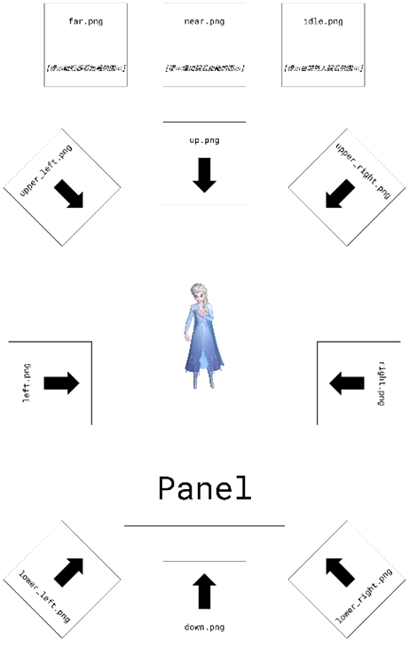

v2026.09.16.01
此次軟體更新內容如下：
- 將 ASUS 提供的分區引導圖片編譯至程式中。
- 更新 Opening Video 的 UI：
- 新增【Position】和【Rotation】輸入框、更新【Scale】輸入框：用於控制影片平面的位置、旋轉與縮放。
- 移除原有的【Height】輸入框。
- 新增【Load】按鈕：用於載入新的開機動畫（僅支援 .mp4 檔）。
- 新增 Guiding Images 的 UI：
- 新增【Load】按鈕：用於載入新的引導圖片。
- 此功能會選擇一個資料夾，將程式中的引導圖片替換成該資料中的圖片。
- 圖片的檔名必須為： idle.png、far.png、near.png、up.png、down.png、left.png、right.png、upper_left.png、upper_right.png、lower_left.png、lower_right.png，主檔名與副檔名皆完全一致，大小寫也必須一致，其餘檔名的圖片會被跳過。
- 各圖片意義如下圖所示：

- 更新 Elsa 的模型與動畫：elsa 0910.glb。
- 更新手勢辨識模型：
- 縮減分類以提高辨識成功率，目前共有 4 個分類：none、fist、palm、victory。
- 其中 fist 為此次重點訓練的目標：可以辨識擊拳手勢，並提高各角度握拳的辨識成功率。
v2026.09.10.01
此次軟體更新內容如下：
- 新增分區引導觀看機制。
- 新增史瑞克的碰撞盒。
- 透過 WebSocket 發送使用者眼睛狀態的訊息。
- 修復碰撞盒不會消失的問題。
v2026.09.02.01
此次軟體更新內容如下：
- 自動偵測連接裝置，以控制顯示內容：
- Dummy Sample：顯示 2D 畫面。
- 幻景浮影裝置：顯示立體浮影。
- 調整場景大小，限縮在 7 吋的範圍內。
- 將預設 FPS 從無上限改為 60。
- 新增 Origin 的控制 UI，用於設定整個場景的原點座標。
- 新增 Opening Video 的控制 UI：
- 【Height】：用於控制開場動畫的漂浮高度。
- 【Scale】：用於控制開場動畫的縮放。
v2026.08.27.01
此次軟體更新內容如下：
- 在主視窗的左上角新增 Opening Video 的控制 UI，共包含 3 個按鈕：
- 【Play】按鈕：開始播放開場動畫。
- 【Stop】按鈕：停止播放開場動畫。
- 【Pause】按鈕：暫停播放開場動畫。
v2026.08.20.01
此次軟體更新內容如下：
- 在 Elsa 身上根據之前華碩提供的切分方式（頭、上半身、下半身）放置了三個碰撞盒，用右手或左手食指指尖觸碰時會將碰撞盒顯示出來。
- 客戶端向伺服端發送指令後，伺服端會回傳該指令是否執行成功。
- 伺服端每幀都會向客戶端發送遠距手勢偵測結果的訊息。
- 伺服端在手指進入或離開 Elsa 身上的三個碰撞盒時，會向客戶端發送事件訊息。
- 以上伺服端與客戶端之間的訊息如何解析請參閱電子郵件附檔的說明文件。
v2026.08.13.01
此次軟體更新內容如下：
- 在主視窗的左上角新增兩個 UI：
- 【Target FPS】：輸入正整數可設定 FPS 上限，若輸入小於等於 0 的值，則設定 FPS 為無上限。
- 【Current FPS】：顯示程式當前的 FPS。